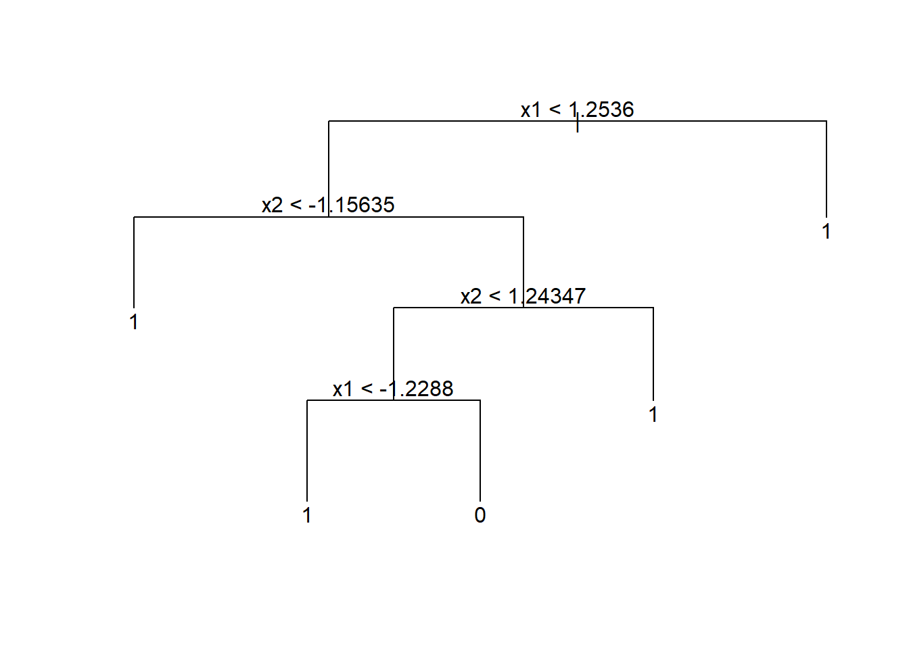
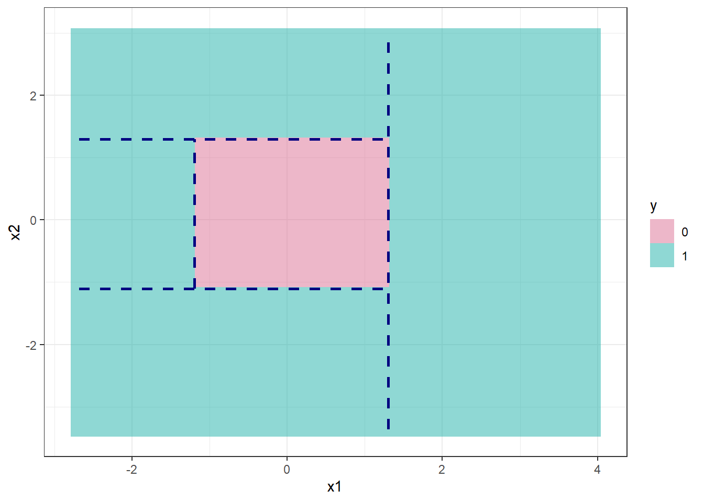
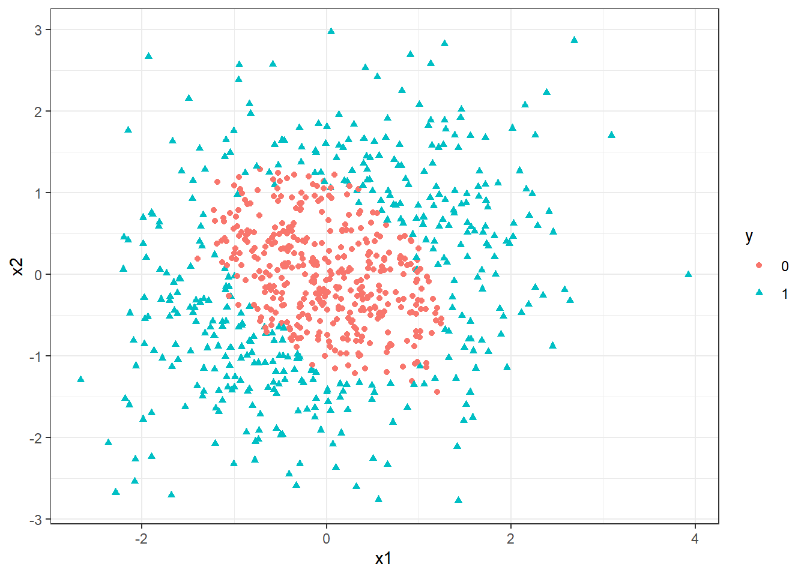
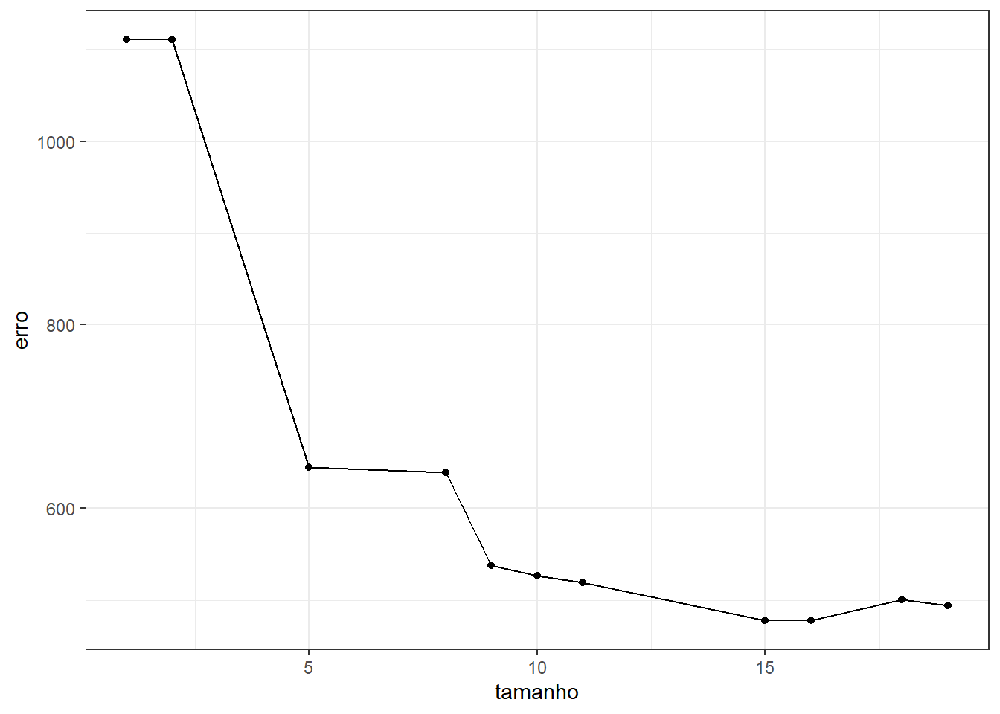
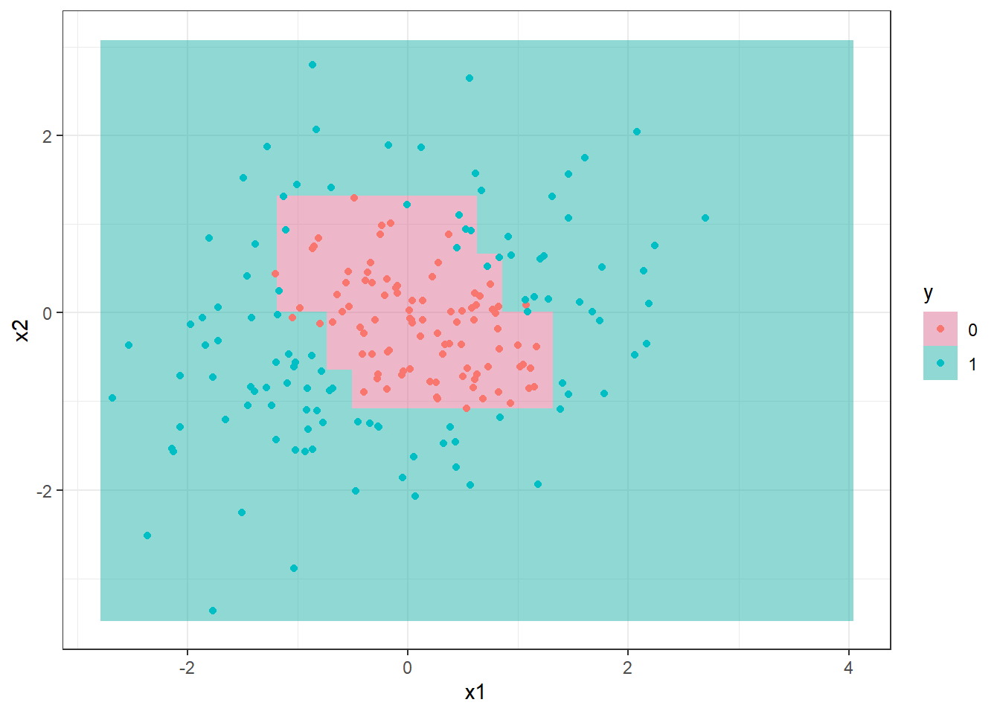
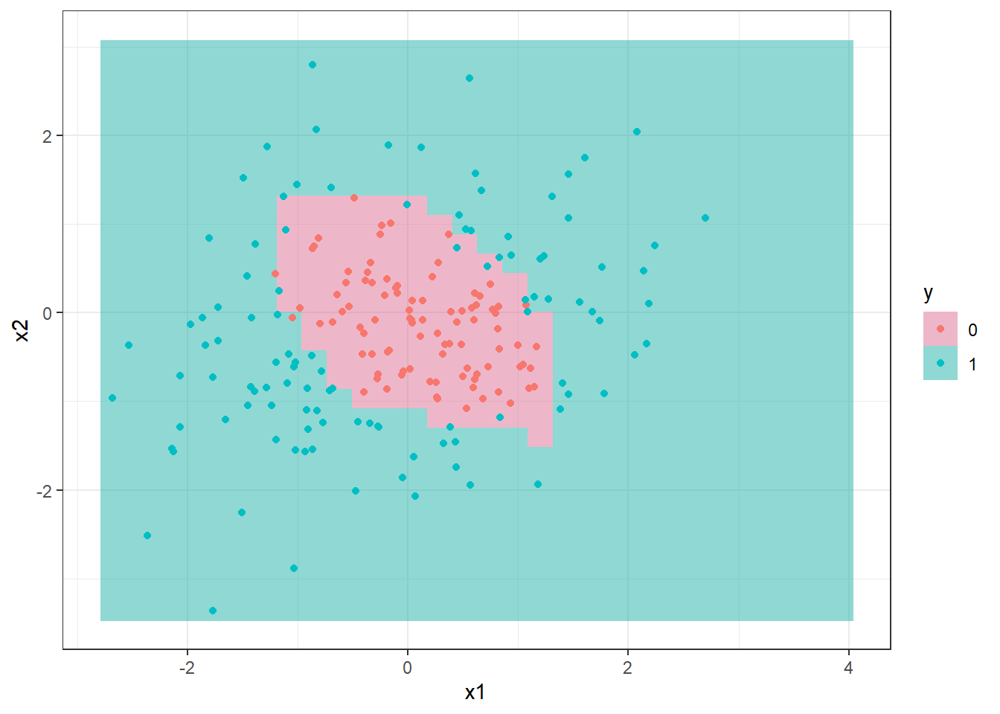

16 Classificação via árvores de decisão e floresta aleatória
16.1 Árvores de decisão para classificação
As árvores de decisão podem ser usadas para classificação, sendo construídas de forma similar às de regressão. Conforme já dito, o método foi concebido para classificação e posteriormente aplicado em regressão. Entretanto, neste livro foram apresentados primeiro os métodos para regressão. De forma similar às árvores de regressão as árvores de classificação dividem o espaço dos preditores em regiões retangulares, sendo a classificação realizada segundo a classe com mais observações na região. O conjunto de regras que define as regiões também pode ser representado em um diagrama de árvore similar ao da Figura 16.1.
A Figura 16.2 exibe um gráfico com as divisões no espaço dos preditores e regiões para as duas classes para um modelo de árvore de decisão para classificação binária correspondente ao modelo da Figura 16.1. Também são exibidos dados de teste. Observa-se que neste caso são determinadas 5 regiões para ao final definir um retângulo central quepara a classe 0, com as regiões ao redor para a classe 1.

Sejam \(k\) variáveis de entrada e uma resposta categórica, ou seja, \((\mathbf{x}_i,y_i)\), com \(\mathbf{x} = (x_{i1}, x_{i2},..., x_{iK})\), para \(i=1,...,N\) observações de treino, e \(y_i = \{1,2,\dots,C\}\). O algoritmo de (Classification and Regression Trees - CART) para classificação, de forma análoga à regressão define a cada iteração a variável preditora e o seu nível para particionar o espaço dos preditores. Considerando \(J\) regiões \(R_1, R_2, ..., R_J\), \(\gamma_j\) consiste na classe predita na região \(j\), \(j=1,...,J\). Portanto, o modelo de árvore de regressão pode ser definido conforme a Equação 16.1, \(\{R_j,\gamma_j\}, j=1,\ldots,J\), onde \(I(\mathbf{x} \in R_j)\) é uma função indicativa que recebe 1 se \(\mathbf{x}\) pertence à região \(R_j\) e 0 caso contrário. Logo a diferença é qual critério usar em classificação para definir a classe em cada região via CART.
\[ \begin{aligned} f(\mathbf{x}) = T(\mathbf{x},R_j,\gamma_j) = \sum_{j=1}^J \gamma_jI(\mathbf{x} \in R_j) \end{aligned} \tag{16.1}\]
Considerando métricas de minimização, um critério simples poderia ser a proporção de classificações incorretas, \(E(R_j)\), conforme Equação 16.2, onde \(N_j\) é o número de observações na região \(j\) e \(I(y_i \neq c)\) recebe um 1 se \(y_i \neq c\) e 0 caso contrário.
\[ E(R_j) = \frac{1}{N_j} \sum_{\mathbf x_i \in R_j} I(y_i \neq c) \tag{16.2}\]
O índice de Gini é uma métrica muito comum como função de impureza nas regiões, sendo calculado conforme Equação 16.3, onde \(\hat{p}_{cj}\) consiste na proporção de observações da classe \(c\) na região \(j\). Este índice é minimizado quando todas as proporções são 0 ou 1, garantindo uma região pura.
\[ G(R_j) = 1 - \sum_{c=1}^C \sum_{\mathbf x_i \in R_j} \hat{p}_{cj}(1-\hat{p}_{cj}) \tag{16.3}\]
De forma similar, a entropia também é bastante utilizada, sendo calculada conforme Equação 16.4. A entropia também é minima quando todas as proporções são 0 ou 1. Os dois últimos índices são mais fáceis de otimizar, por serem deriváveis, sendo mais comuns como função perda na classificação.
\[ H(R_j) = 1 - \sum_{c=1}^C \sum_{\mathbf x_i \in R_j} \hat{p}_{cj} \text{log }\hat{p}_{cj} \tag{16.4}\]
Considerando todos os dados de treinamento, as divisões são definidas tomando uma variável para divisão, \(x_k\), \(k = 1,..., K\), e um ponto de divisão \(x_k = s\), \(R_1(k,s)\) = \({\mathbf{x}|x_k \leq s}\) e \(R_2(k,s)\) = \({\mathbf{x}|x_k>s}\). Portanto, o algoritmo CART busca a variável para o particionamento e o valor desta na divisão para mnimizar o erro de classificação. Considerando o índice de Gini, em cada partição busca-se minimizar a Equação 16.5, onde \(|.|\) consiste no número de observações, de forma que os índicers de Gini em cada região são ponderados pelas proporções de observações nas regiões geradas pela partição.
\[ \begin{aligned} \min_{k,s} \left[ \frac{|R_1(k,s)|}{|R|} \cdot G(R_1(k,s)) + \frac{|R_2(k,s)|}{|R|} \cdot G(R_2(k,s)) \right] \end{aligned} \tag{16.5}\]
O algoritmo CART repete o particionamento recursivamente até um determinado critério de parada ser alcançado, por exemplo, até um número mínimo de observações em cada partição ser atingido.
Seja um conjunto de dados sintético para classificação binária exibido na Figura 16.3. Pode-se observar que os dados da classe 0 estão ilhados, cercados por observações da classe 1.

Um modelo de árvore de decisão inicial é exibido abaixo. De forma análoga ao já explicado em regressão, o modelo de árvore para classificação pode ser descrito como um conjunto de regras “se” “se não”. Observa-se que neste caso foram geradas muitas partições.
node), split, n, deviance, yval, (yprob)
* denotes terminal node
1) root 800 1109.000 0 ( 0.50250 0.49750 )
2) x1 < 1.2536 704 961.700 0 ( 0.57102 0.42898 )
4) x2 < -1.15635 94 33.080 1 ( 0.04255 0.95745 )
8) x1 < 0.269346 76 0.000 1 ( 0.00000 1.00000 ) *
9) x1 > 0.269346 18 19.070 1 ( 0.22222 0.77778 ) *
5) x2 > -1.15635 610 788.000 0 ( 0.65246 0.34754 )
10) x2 < 1.24347 544 634.800 0 ( 0.72978 0.27022 )
20) x1 < -1.2288 57 10.070 1 ( 0.01754 0.98246 ) *
21) x1 > -1.2288 487 469.100 0 ( 0.81314 0.18686 )
42) x1 < -0.782317 75 101.700 0 ( 0.58667 0.41333 )
84) x2 < 0.0867716 34 28.390 1 ( 0.14706 0.85294 )
168) x2 < -0.386035 22 0.000 1 ( 0.00000 1.00000 ) *
169) x2 > -0.386035 12 16.300 1 ( 0.41667 0.58333 ) *
85) x2 > 0.0867716 41 15.980 0 ( 0.95122 0.04878 ) *
43) x1 > -0.782317 412 342.000 0 ( 0.85437 0.14563 )
86) x2 < 0.582024 330 177.100 0 ( 0.92424 0.07576 )
172) x2 < -0.973146 23 31.840 0 ( 0.52174 0.47826 )
344) x1 < -0.220439 10 0.000 1 ( 0.00000 1.00000 ) *
345) x1 > -0.220439 13 7.051 0 ( 0.92308 0.07692 ) *
173) x2 > -0.973146 307 113.800 0 ( 0.95440 0.04560 )
346) x1 < 0.932356 270 64.950 0 ( 0.97407 0.02593 )
692) x2 < -0.634514 47 39.560 0 ( 0.85106 0.14894 )
1384) x1 < -0.433689 9 9.535 1 ( 0.22222 0.77778 ) *
1385) x1 > -0.433689 38 0.000 0 ( 1.00000 0.00000 ) *
693) x2 > -0.634514 223 0.000 0 ( 1.00000 0.00000 ) *
347) x1 > 0.932356 37 35.890 0 ( 0.81081 0.18919 )
694) x2 < 0.0589345 27 0.000 0 ( 1.00000 0.00000 ) *
695) x2 > 0.0589345 10 12.220 1 ( 0.30000 0.70000 ) *
87) x2 > 0.582024 82 111.900 0 ( 0.57317 0.42683 )
174) x1 < 0.652175 62 68.610 0 ( 0.75806 0.24194 )
348) x1 < -0.0253264 33 15.090 0 ( 0.93939 0.06061 ) *
349) x1 > -0.0253264 29 39.890 0 ( 0.55172 0.44828 )
698) x2 < 0.778214 9 0.000 0 ( 1.00000 0.00000 ) *
699) x2 > 0.778214 20 25.900 1 ( 0.35000 0.65000 ) *
175) x1 > 0.652175 20 0.000 1 ( 0.00000 1.00000 ) *
11) x2 > 1.24347 66 10.360 1 ( 0.01515 0.98485 ) *
3) x1 > 1.2536 96 0.000 1 ( 0.00000 1.00000 ) *Para evitar overfitting, pode-se usar de validação cruzada para “podar” a árvore. A Figura 16.4 plota o erro na validação cruzada segundo a dimensão da árvore. Pode-se observar que 15 divisões ou folhas acarretou no menor erro.

A árvore de decisão resumida abaixo consiste na obtida com 15 folhas.
node), split, n, deviance, yval, (yprob)
* denotes terminal node
1) root 800 1109.000 0 ( 0.50250 0.49750 )
2) x1 < 1.2536 704 961.700 0 ( 0.57102 0.42898 )
4) x2 < -1.15635 94 33.080 1 ( 0.04255 0.95745 ) *
5) x2 > -1.15635 610 788.000 0 ( 0.65246 0.34754 )
10) x2 < 1.24347 544 634.800 0 ( 0.72978 0.27022 )
20) x1 < -1.2288 57 10.070 1 ( 0.01754 0.98246 ) *
21) x1 > -1.2288 487 469.100 0 ( 0.81314 0.18686 )
42) x1 < -0.782317 75 101.700 0 ( 0.58667 0.41333 )
84) x2 < 0.0867716 34 28.390 1 ( 0.14706 0.85294 ) *
85) x2 > 0.0867716 41 15.980 0 ( 0.95122 0.04878 ) *
43) x1 > -0.782317 412 342.000 0 ( 0.85437 0.14563 )
86) x2 < 0.582024 330 177.100 0 ( 0.92424 0.07576 )
172) x2 < -0.973146 23 31.840 0 ( 0.52174 0.47826 )
344) x1 < -0.220439 10 0.000 1 ( 0.00000 1.00000 ) *
345) x1 > -0.220439 13 7.051 0 ( 0.92308 0.07692 ) *
173) x2 > -0.973146 307 113.800 0 ( 0.95440 0.04560 )
346) x1 < 0.932356 270 64.950 0 ( 0.97407 0.02593 )
692) x2 < -0.634514 47 39.560 0 ( 0.85106 0.14894 )
1384) x1 < -0.433689 9 9.535 1 ( 0.22222 0.77778 ) *
1385) x1 > -0.433689 38 0.000 0 ( 1.00000 0.00000 ) *
693) x2 > -0.634514 223 0.000 0 ( 1.00000 0.00000 ) *
347) x1 > 0.932356 37 35.890 0 ( 0.81081 0.18919 )
694) x2 < 0.0589345 27 0.000 0 ( 1.00000 0.00000 ) *
695) x2 > 0.0589345 10 12.220 1 ( 0.30000 0.70000 ) *
87) x2 > 0.582024 82 111.900 0 ( 0.57317 0.42683 )
174) x1 < 0.652175 62 68.610 0 ( 0.75806 0.24194 ) *
175) x1 > 0.652175 20 0.000 1 ( 0.00000 1.00000 ) *
11) x2 > 1.24347 66 10.360 1 ( 0.01515 0.98485 ) *
3) x1 > 1.2536 96 0.000 1 ( 0.00000 1.00000 ) *Tomando observações de teste pode-se plotar a árvore de classificação no espaço dos preditores conforme Figura 16.5.

16.2 Bagging
De forma similar à regressão a agregação por bootstrap ou bagging visa agregar a previsão de várias árvores de decisão. Para tal, são realizadas reamostragens com reposição ou bootstrap dos dados de treino e para cada reamostragem com reposição uma nova árvore é obtida. Apartri de \(B\) reamostragens e \(B\) árvores, para uma observação de teste ou futura \(\mathbf x_0\) obtém-se \(B classificações\). A partir de tais classificações sabe a proporção de árvores que prevêem cada classe e, ao final, a partir da maior proporção, realiza-se a classificação para a observação de interesse. Tal classificador pode ser escrito conforme a Equação 16.6, como sendo a moda das classificações das \(B\) árvores obtidas via bootstrap.
\[ \text{Mo } \{\hat f^*_1(\mathbf x), \hat f^*_2(\mathbf x), \dots, \hat f^*_B(\mathbf x)\} \tag{16.6}\]
A Figura 16.6 ilustra a classificação para os dados de teste considerando um modelo obtido via bagging com 300 árvores. É importante realizar validação cruzada para definir o número de árvores ideal para o conjunto de dados de interesse.

16.3 Floresta aleatória
Conforme já discutido em regressão, o modelo de floresta aleatória consiste em uma evolução do modelo bagging com a finalidade de diminuir a variância deste, limitando o número de variáveis a serem consideradas em cada particionamento binário recursivo, afim de decorrelacionar as árvores de decisão geradas. Geralmente para classificação recomenda-se \(m=\sqrt{k}\).
16.4 Implementações em R
A seguir serão expostas as implementações necessárias para obter os resultados do capítulo.
16.4.1 Árvores de decisão
Carregando pacotes.
library(tree)
library(mvtnorm)
library(dplyr)
library(ggplot2)
theme_set(theme_bw())Simulando dados para classificação.
# Parametros para simular dados
set.seed(14)
m = c(0,0) # vetor de medias
S = matrix(c(1, 0.2, 0.2, 1), 2) # matriz de covariancia
# Simulando dados
dados <- rmvnorm(1000, mean = m, sigma = S)
# calculando distancia para separar classes
S2 <- matrix(c(1, -0.5, -0.5, 1), 2)
dist <- mahalanobis(dados, c(0,0), S2)
# transformando em data.frame
dados <- data.frame(dados)
colnames(dados) <- c("x1","x2")
# definindo coluna com classes
dados$y <- ifelse(dist + rnorm(nrow(dados), sd = 0.3) < 1.7, 0, 1)
dados$y <- as.factor(dados$y)Separando dados de treino e teste.
set.seed(7)
treino <- sample(nrow(dados), 0.8*nrow(dados))
dados_treino <- dados[treino,]
dados_test <- dados[-treino,]Visualizando dados de treino e teste.
ggplot(dados |>
mutate(tipo = ifelse(1:nrow(dados)%in%treino,
"treino",
"teste")),
aes(x1,x2, col = y)) +
facet_grid(cols=vars(tipo)) +
geom_point()Árvore de decisão.
tree1 <- tree(y~x1+x2, dados_treino)
tree1
# plot(tree1)
# text(tree1)Validação cruzada para podar a árvore.
cv.tree1 <- cv.tree(tree1)
plot(cv.tree1)Árvore de decisão após “poda”.
prune1 <- prune.tree(tree1, best = 15)
plot(prune1)
text(prune1)Visualizando a fronteira de classificação.
xs <- seq(min(dados$x1), max(dados$x1), length = 30)
ys <- seq(min(dados$x2), max(dados$x2), length = 30)
xys <- expand.grid(x1=xs,x2=ys)
xys$y <- predict(prune1, xys, type = "class")
ggplot() +
geom_raster(data = xys,
mapping = aes(y = x2,
x = x1,
fill = as.factor(y)),
alpha = .5) +
scale_fill_manual(values = c ("palevioletred", "lightseagreen")) +
geom_point(data = dados_test,
mapping = aes(x=x1,y=x2, col = as.factor(y))) +
labs(col = "y", fill = "y")16.4.2 Bagging e floresta aleatória
O mesmo comando serve para fazer bagging e floresta aleatória. Deve-se entender que ao definir o argumento mtry como o inteiro mais próximo de \(\sqrt{k}\) o resultado é um modelo de floresta aleatória. Caso, \(mtry=k\), então obtém-se um modelo bagging. A seguir o código para obter um modelo de classificação via bagging.
set.seed(3)
bag1 <- randomForest(y~x1+x2,
dados_treino,
mtry = 2,
importance = TRUE,
ntree = 300)
bag1Visualizando a fronteira de decisão.
xys$y <- predict(bag1, xys, type = "class")
ggplot() +
geom_raster(data = xys,
mapping = aes(y = x2,
x = x1,
fill = as.factor(y)),
alpha = .5) +
scale_fill_manual(values = c ("palevioletred", "lightseagreen")) +
geom_point(data = dados_test,
mapping = aes(x=x1,y=x2, col = as.factor(y))) +
labs(col = "y", fill = "y")Referências
Hastie, T., Tibshirani, R., Friedman, J. H., & Friedman, J. H. (2009). The elements of statistical learning: data mining, inference, and prediction (Vol. 2, pp. 1-758). New York: springer.
Gareth, J., Daniela, W., Trevor, H., & Robert, T. (2013). An introduction to statistical learning: with applications in R. Spinger.